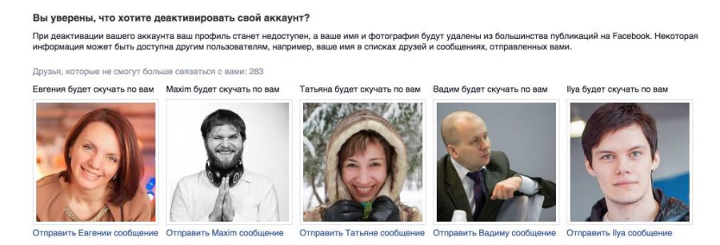

Прогнозы фантастов понемногу сбываются. Будущее наступает, не сразу по всему миру, конечно. Даже далёкие от всяких интернетов друзья за столом теперь втыкают в социальные сети, а иногда даже постят и инстаграмят.
Когда я вижу таких людей вокруг на ум приходят кадры из фильма «Суррогаты» с Брюсом Уиллисом. В этом фильме 98% населения Земли не выходят из дома. Суррогаты, которые были придуманы, чтобы помочь инвалидам вести жизнь обычного человека, стали популярными у обычных людей. Людям стало комфортнее и проще сидеть по домам, управляя своим суррогатом. К тому же суррогат может выглядеть как угодно.
Думаю, можно утверждать, что люди, если рассматривать психологическую сторону вопроса, прошли уже хорошую часть пути к своим суррогатам. Популярно мнение, что социальные сети не заменяют, а расширяют интересы. Соглашусь, но, во-первых, нужно очень строго контролировать, чтобы это было именно расширение, а не подмена. А, во-вторых, необходима постоянная ревизия интересов. Разве это нормально, что наводнение в Аргентине и количество шуб у Сечина стало тревожить тебя больше, чем жизнь твоих друзей и родных?
Вот и я стал проводить в фейсбуке слишком много времени, о чём (как человек всё же умный) постоянно сожалею. Для переоценки ценностей я периодически и раньше устраивал себе недели, а то и месяц без фейсбука, но в конце февраля я решил попробовать более радикальный метод и на время вовсе удалиться из этой социальной сети.
Фейсбук лоялен к людям, которые решили вдруг так изменить свою жизнь. В отличие от «Одноклассников», здесь есть возможность оставить при удалении себе все свои нажитые непосильным трудом посты (которые на самом деле никому уже не нужны), но, главное, социальные связи (так теперь принято называть знакомства). На языке фейсбука эта процедура называется «деактивацией аккаунта».
Прелесть деактивации в том, что ты можешь в любой момент свой аккаунт активировать вновь, но до этого времени твоё имя не будет доступно ни в поиске, ни в подстановке в публикации других пользователей. Также тебе не будет приходить никаких уведомлений. Чтобы дополнительно подстраховать себя от потери тебя, фейсбук предлагает также воспользоваться автоматической активацией аккаунта через выбранное количество дней.
Последней каплей стало убийство Немцова, захотелось вдруг тратить своё время не на чтение причитаний, как всё плохо и изучение диванных аналитиков.
Как и «Одноклассники» фейсбук пытается манипулировать чувствами и предлагает не делать поспешных решений. Но я ничего не теряю, к тому же любопытно понаблюдать за своими чувствами и поведением.

С утра в субботу 28 февраля я деактивировал аккаунт и начал свой полупринудительный фейсбук-шабат. Удалил приложение и мессенджер с телефона.
Первое время ловил себя на мысли, что хочется узнать, «а как там». Это желание появлялось периодически дня три. Пару раз пальцы сами открывали новую вкладку в браузере и набирали facebook.com. Ужас.
Стали писать и даже звонить friends. Ты где… Что случилось… Я не вижу тебя у себя в друзьях. Разъяснял ситуацию, успокаивал. Вернёшься? Вернусь.
Себя я отношу у той части людей, которая больше пишет, чем читает. Появилась вторая проблема, пожалуй самая любопытная. Нужно было как-то бороться с Желанием Делиться.
Желание Делиться — базовое желание, которое эксплуатируют социальные сети. Увидел смешную фотку — делись, забавный ролик — делись, пришла в голову интересная (только тебе) мысль — делись обязательно и не медли! В фейсбуке мы производим мегабайты ничего, которое уже завтра утонет навсегда в ленте.
В субботу выпало много снега. Сходил в ЖЭК взял лопату, часа за 3 убрал снег от двух подъездов. Ах, как бы это было круто запостить сейчас в фейсбук. Купил порожки в «Доминго» для стыка кафеля и ламината — не подошли. Деньги вернули сразу и наличкой, хотя платил картой. Господи, это ведь всем интересно, как это всё держать в себе?!
Дней через пять привычка лайкать и шерить окончательно ушла. Я уже не дёргал телефон в машине, чтобы проверить обновления, я уже победил Желание Делиться.
Работал больше прежнего, отметил день рождения.
А 11 марта на пресс-конференции Сбербанка Татьяна Думенко сказала: «Гляди, на тебя опять можно нажать». Аккаунт автоматически активировался через выбранные мной 10 дней, я вернулся к прежней жизни пройдя через пост. Наверное, немного другим человеком.